NodeBox Gallery
A collection of NodeBox projects making use of the various libraries. Don't miss Evolution, Superfolia and Twisted World! And do send us your own stuff you want to show.
 Landslide (2004) | 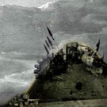 Movies for Mecca (2004) | 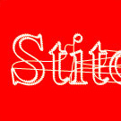 LetterKnitter (2005) | 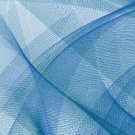 Coldfire (2005) |
| 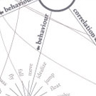 ConceptNet graphs (2005) | 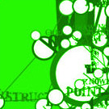 Notwork (2005) | 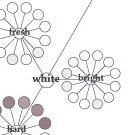 Prism (2005) | Blines and circloids (2005) |
| 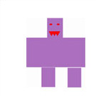 Vincent's robot (2005) | 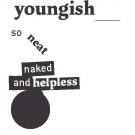 Flowerewolf (2005) | 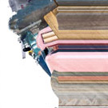 Photobjects (2005) | 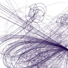 Ariel (2005) |
| 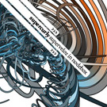 Supercurly (2005) |  Ant Colony (2005) | 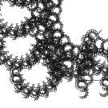 Dryad (2005) | 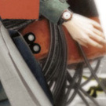 Percolator (2005) |
| 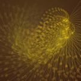 Fireworks (2006) | GCD (2006) | 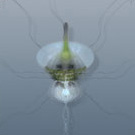 Evolution (2006) | 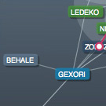 Graph (2006) |
| 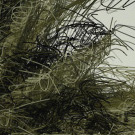 Superfolia (2006) | 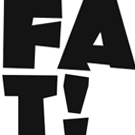 Fatpath (2006) | 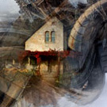 Twisted World (2006) | Cornucopia (2007) |
| 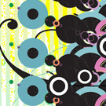 Rit Mishra's work (2007) | Brendan Dawes' art (2007) | 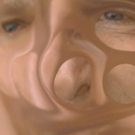 Membrane (2007) | 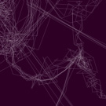 Dendrite (2007) |
| 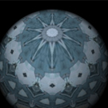 Geospheres (2007) | 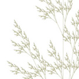 Mark Meyer's L-systems |  Organic Universe (2007) |  Andren's thesis (2007) |
 Web library (2007) |  Frédéric's fairytales (2007) |  Colors library (2008) |  Workshop Helsinki (2008) |
 Parametric surfaces (2008) |  Texture tiles (2008) |  Tendrils (2008) |  Growing things (2008) |
 Perception (2008) |  Cars (2008) |  ColorSpinner (2008) |  Neon Golden (2008) |
 Perception comparisons (2009) |  Aquatics! (2009) |  Genetic algorithm (2009) |  Typographic posters (2009) |
 Creature (2009) |  Nanophysical (2010) |  Spamghetto (2010) |  Give Me My Data (2010) |
 Lunar Calendar (2010) |  Vampyr! (2011) |  Generative identity (2012) |  Sundial (2012) |